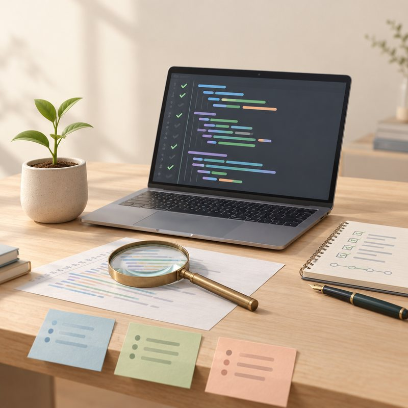

My philosophy

Quality is not added at the end: it is nurtured from the very first line of code. With a dual background in development and software testing, I build applications that are reliable, maintainable and accessible to everyone, in line with the WCAG and the RGAA (French government accessibility standard). I like to understand the real need before coding, to document my work and to move forward as a team, with agile methods or the V-model.